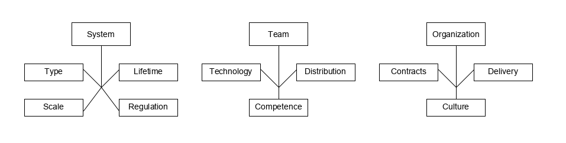

class: center, middle # Kapitel 03: Agile software development Benedikt Wiest --- ## Agenda * Agile Methodik - Herkunft * Das agile Manifest * Agiles Vorgehensmodell - XP * Agiles Vorgehensmodell - Scrum * Skalierung agiler Methodik * Entwicklung großer Softwaresysteme mit agiler Methodik * Agile Methodik in großen Organisationen --- ## Herkunft agiler Methodik * Entwicklungsgrund - Veränderung der Arbeitsweise von Unternehmen/ Organisationen * schnell aufkommende digitale Märkte * Softwareentwicklung muss schneller gehen * Anforderungen an Software ändern sich schneller * Anforderungen kommen erst während der Entwicklung auf * plangesteuerte Vorgehensmodelle werden dem nicht gerecht * Ende der 90er -> agile Methodik * heute als Synonym für schnelle Entwicklung --- ## Eigenschaften von agiler Methodik * agile Methdodik wir in Vorgehensmodellen umgesetzt * Gemeinsamkeiten der meisten Vorgehensmodelle: * Aktivitäten im Entwicklungsprozess sind verschachtelt * Detailierte Spezifikationen werden nicht/ nur minimal erstellt * Keine ausführliche Anforderungsanalyse zu Beginn * Inkrementelle Entwicklung * Einbeziehung der Stakeholder (Feedback) * Nutzung von Tooling zur Unterstützung des Prozess --- ## Das agile Manifest * Erstellt von einem Zusammenschluss von Softwarentwicklern * Versteht sich als Philosophie der agilen Methodik * Basis für alle agilen Vorgehensmodelle * Auszug aus dem agilen Manifest: | Grundsatz | Beschreibung | |--|--| | Einbindung des Kunden | Enge Einbindung des Kunden, Definition und Priorisierung neuer Anforderungen, Feedback zu Iterationen | | Veränderung aufgeschlossen gegenüberstehen| Damit rechnen das sich Anforderungen ändern und Software entsprechend entwickeln | | Inkrementelle Auslieferung | Software wird iterativ entwickelt, Versionen verbessern jeweils die vorherige | | Einfachheit | Komplexität an jeder möglichen Stelle reduzieren um Einfachheit herzustellen | | Menschen > Prozesse | Kompetenz der Entwickler nutzen und die etablierung eigener Arbeitsweisen zulassen, statt stur an Prozessen festzuhalten | --- ## Extreme Programming - XP * Entwickelt von Kent Beck als Reaktion auf agiles Manifest * Benennung, da agile Methodik und iterative Entwicklung auf ein extremes Niveau getrieben wird * XP versteht sich als Vorgehensmodell - High Level enthält der Prozess folgende Schritte 1. Anforderungsanalyse durch User Stories 2. Umsetzung der User Stories in Arbeitspakete (Tasks) 3. Umsetzung der Tasks durch Entwickler in 2er Teams (Test-first Strategie) 4. Integration nach dem alle Tests erfolgreich gelaufen sind 5. Release einer neuen Version * Nachweis über Verfügbarkeit und Durchführung von Sicherheitsprüfungen <div style="margin-top:30px;"> <img style="width:100%;" src="img/XP.PNG"/> </div> --- ## XP Grundsätze * Umsetzung der agilen Methodik in Grundsätzen - Auszug in Tabelle * Weitere wichtige Bestandteile werden auf den folgenden Slides beschrieben |Grundsatz| Beschreibung | |--|--| | Kollektives Eigentum | Entwicklerpaare arbeiten an jeder Stelle, keine Bildung von Kompetenzinseln. Jeder kann alles ändern. | | Inkrementelle Planung | Anforderungen (User Stories) werden auf Story Cards festgehalten und je nach verfügbarer Zeit und Priorität umgesetzt | | On-site Customer | Kunde ist Bestandteil der Entwicklung, ein repräsentativer End-Nutzer muss dem Entwicklerteam permanent zur Verfügung stehen | | Simple design | Umsetzung nicht über das Ziel hinaus, es wird nur das umgesetzt was angefordert ist | | Konstante Geschwindigkeit | Überarbeitung führt zu schlechterem Code und mittelfristig zur geringerer Produktivität | --- ## User Stories * XP sieht keine seperate Phase der Anforderungserhebung vor - verschachtelt im Entwicklungsprozess * Aufnahme von Anforderungen in Form von User Stories - Nutzungsszenarien * Umsetzung der User Stories in Story Cards - konkrete Beschreibung der Kundenbedürfnisse * Ermittlung von Tasks aus Story Cards - Abschätzung des Aufwand durch Entwickler * Umsetzung der Tasks in einer der folgenden Iterationen * Vorteil -> Menschen können sich besser mit Geschichten identifizieren, als mit Stichpunkten in Anforderungslisten * Nachteil -> erfahrene Benutzer lassen Details weg die für sie selbst offensichtlich sind, dadurch können User Stories unvollständig sein --- ## Refactoring * traditionelles Software Engineering -> Code so entwickeln, dass mögliche Änderung leicht umsetzbar sind * Aufwand relativ hoch * XP -> Keine Zeit darauf verwenden ein System allgemeiner zu gestalten als zwingend nötig * Erwartete Anforderung kommen häufig nicht auf, oder werden anders als geplant gestellt * In XP wird stattdessen permanentes Refactoring gelebt * Refactoring -> Überarbeitung und Optimierung von bestehendem Code * Maßnahmen können beispielswiese die Reorganisation von Klassensturkturen oder das aufräumen von Klassen sein * Vorteile -> permanente Wartung des Code, Verbesserung der Lesbarkeit * Nachteile -> Projektdruck führt dazu das Refactoring übersprungen wird, Refactoring benötigt Ressourcen --- ## Test first Entwicklung * Plangesteuerter Ansatz -> Erstellung von Tests auf Basis der Systemspezifikation * bei agilem Vorgehen existiert vorab keine detailierte Systemspezifikation * XP schlägt eine Test-first Strategie vor * Inkrementelle Entwicklung von Tests - unmittelbar vor dem eigentlichen Code! * Basis -> Story Cards * Einbindung von Endnutzern in die Testentwicklung * Nutzung von automatisierten Test Frameworks (z.B. JUnit) * Vorteile -> implizite Definition von Verhalten und Schnittstellen, Vermeidung von Fehlern, hohe Code coverage * Nachteile -> die Nutzung von Test Frameworks ist nahezu unumgänglich --- ## Pair programming * Entwickler arbeiten in 2er Teams - am selben Computer & Code * Dynamische Bildung der Teams * Keine Bildung von Kompetenzinseln - Realisierung eines Systems als kollektives Eigentum * wenig formelles Überprüfungsverfahren für den Code - 4 Augen Prinzip * Ermutigung zu umfangreichen Refactoring * Gängige Meinung - Pair programming sorgt für Produktivitätsverlust * Studien unter Studenten können keinen Produktivitätsverlust belegen * Studien unter erfahrenen Entwicklern zeigte einen erheblichen Produktivitätsverlust --- ## Scrum * Problem -> agile Methodik ermöglicht externen kaum Einblick ins Projektgeschehen * Beurteilung des Projektfortschritts auf Basis der Phasen * agile Methodik kollidiert mit grundsätzlichem Bedürfnis nach Transparenz in großen Unternehmen * Entwicklung von Scrum für Organisationen welche mit agiler Methodik arbeiten * ermöglicht Projektcontrolling * Scrum gibt keine expliziten Vorschriften welche agilen Methoden eingesetzt werden sollen * Um Scrum von herkömmlichem Projektmanagement abzugrenzen, wurde eine neue Terminologie eingeführt --- ## Scrum Terminologie |Scrum Begriff| Erklärung | |--|--| | Entwicklerteam | Gruppe aus bis zu 7 Entwicklern, welche sich selbst organisiert und für Entwicklung verantwortlich ist | | Potentiell auslieferbares Produktinkrement | Software Inkrement das in einem Sprint erstellt wird. Potentiell auslieferbar soll bedeuten, dass dieses Inkrement ohne Bearbeitung weiterer Arbeiten ausgeliefert werden. | | Product backlog | To-Do Liste für das Entwicklerteam. Kann zu entwickelnde Features, Anforderungen, User Stories oder Dokumentationen/ Architekturdefinitionen oder weiteres enthalten. | | Product owner | Person welche neue Anforderungen ermittelt, priorisiert und das Product backlog permanent pflegt. Kann auch eine kleine Gruppe an Personen sein. Kann ein Kunde, Produktmanager oder ein anderer Stakeholder sein. | | Scrum | Tägliches Meeting, in welchem der Fortschritt besprochen wird und zu erledigende Arbeit verteilt wird. Findet idealerweise mit allen Mitgliedern und in Präsenz statt. | | Scrum Master | Verantwortlich für die Einhaltung des Scrum-Prozess. Coacht die Mitglieder. Stellt Schnittstelle zum Rest des Unternehmens her und schirmt das Projektteam ab vor externen Einflüssen. | | Sprint | Iteration der Entwicklung, welche 2-4 Wochen dauert. | | Velocity | Schätzung wieviel in einem Sprint erledigt werden kann. | --- ## Scrum Prozess * Input für den Prozess sind die Anforderungen/ Aktivitäten aus dem Product backlog * Jede Iteration (Dauer von 2-4 Wochen) erzeugt ein Softwareinkrement * Zu Beginn eines Sprints werden die Aktivitäten ausgewählt, welche im Sprint umgesetzt werden sollen und ins Sprint backlog übernommen * Entwickler wählen Aktivitäten aus dem Sprint backlog und setzen diese um * Tägliches Meeting -> Scrum - alle Beteiligten beantworten woran sie arbeiten, welche Probleme es gibt und was als nächstes geplant ist * Scrum wird durch Scrum Master moderiert und dient der kurzfristigen Planung * Meeting am Ende des Sprints -> Review Meeting - Besprechung was im folgenden Sprint besser gemacht werden kann <div style="margin-top:30px;"> <img style="width:100%;" src="img/Scrum.PNG"/> </div> --- ## Scrum Vorteile * Ermöglicht konventionelles Projekt Controlling * Zerlegung des Produkts in kleinere Teile, daraus resultiert ein besseres Verständnis für das Produkt * Unklare, oder fehlerhafte, Anforderungen halten den Prozess nicht auf * Höhere Arbeitsmoral entsteht durch mehr Kommunikation und starke Transparenz des Prozess * Zufriedenere Kunden durch regelmäßige Auslieferung von Inkrementen und Einbindung in den Entwicklungsprozess * Aufbau von Vertrauen zwischen Entwickler und Kunde --- ## Skalierung agiler Methodik * Agile Methodik wurde ursprünglich für kleine Teams entwickelt welches eng (räumlich) zusammenarbeitet * Zahlreiche Vorteile agiler Methodik -> Unternehmen haben Interesse diese auch bei großen Softwareprojekten und Projekten abseits von Software zu nutzen * Methoden müssen daher skaliert werden * Ziele der Skalierung: * agile Methodik für große Softwaresysteme an denen mehr als ein Team arbeitet * Nutzung agiler Methodik abseits von Software * Studien gehen davon aus, dass durch agile Methodik eine Produktivitätssteigerung von 15% über 3 Jahre erreicht werden kann --- ## Probleme agiler Methoden * informelle Arbeitsweise -> kollidiert mit Rahmenbedingungen großer Unternehmen * Beispiel - Wie sollen Verträge ausgehandelt werden, ohne Anforderungsdokument? * Großteil der Kosten wird durch die Wartung von Software verursacht - hierfür ist agile Methodik nicht vorgesehen weil: * Per Definition fehlende Dokuementation * Zusammenhalten der Entwicklerteams schwierig * keine konstante Einbindung des Kunden * Lösung -> Kombination von agilen und plangesteuerten Methoden! --- ## Agile & plangesteuerte Methoden * Kernfrage - wie und in welchem Umfang können agile Methodik und plangesteuerte Aktivitäten kombiniert werden? * Zur Beurteilung kann eine Reihe an Fragen herangezogen werden * Fragen beziehen sich dabei auf das zu entwickelnde System, das Entwicklerteam und die Organisation selbst <div style="margin-top:30px;">  </div> --- ## Einflussfaktoren System * Wie groß ist das zu entwickelnde System? * agile Methodik eignet sich eher für kleine, eng zusammenarbeitende Teams * Welche Art von System wird entwickelt? * Komplexe Systeme benötigen ggf. einen detailierten Entwurf * Wie hoch ist die Lebensdauer des Systems? * Bei hoher Lebensdauer sollte sichergestellt werden, dass das Entwicklerteam auch in der Wartungsphase noch zusammen dabei ist * Welche Regulierungen gelten für das System? * Systeme welche besonders gut dokumentiert werden müssen, sollten eher mit plangesteuerten Ansätzen entwickelt werden --- ## Einflussfaktoren Entwickler * Wie kompetent sind die Entwickler:innen? * für agile Methodik wird eine höher Kompetenz benötigt - bei plangesteuerten Ansätzen kann Arbeit nach Anspruch besser verteilt werden * Arbeitet das Entwicklerteam zentral zusammen? * Entwicklung agiler Methodik für kleine, eng zusammenarbeitende Teams * Welche Technologien stehen zur Unterstützung zur Verfügung? * agile Methodik ist eher auf Tools angewiesen --- ## Einflussfaktoren Organisation * Existieren für die Organisation regulierende Rahmenbedingungen? * Wenn ausführliche Spezifikationen oder Dokumentationen benötigt werden, kommen eher plangesteuerte Ansätze in Frage * Kann eine inkrementelle Strategie umgesetzt werden? Stehen repräsentative Nutzer zur Verfügung? * Welche Kultur prägt die Organisation? * agile Methodik und starre Organisationen vertragen sich nicht gut --- ## Problem - große Systeme * hohe Komplexität * Verschachtelte Systeme - Entwickler haben selten einen Gesamtüberblick * Brownfield Systeme * Kombination aus neuen & alten Systemen * Systeme wachsen historisch * Integration mehrerer Systeme * Rechtliche & regulatorische Rahmenbedingungen * lange Beschaffungszeiten * Umsetzung großer Systeme mit agiler Methodik -> schwierig --- ## Agile Methdoik für große Systeme * Entwicklung mehrerer spezieller Frameworks * z.B. IBM mit Agile Scaling Model (ASM) * erweiterung des Scrum Modell * kein allgemeingültiges Modell zur Entwicklung großer Systeme * Gemeinsamkeiten entwickelter Modelle * Anforderungsanalyse nicht in streng inkrementellen Ansatz * in jedem Produktbereich eigener Product Owner * kein Verzicht auf Dokumentation und Entwürfe * Kommunikationsprozesse * regelmäßige Builds des Gesamtsystem --- ## Agile Methodik einführen - Points of failure * Einführung agiler Methoden in Unternehmen bietet viele Stolpersteine * Mögliche Problemne * Projektleitung ohne Erfahrung mit agiler Methodik * Qualitätsstandards oder Verfahren welche für alle Produkte gelten * breites Spektrum an Fähigkeiten, statt tiefes * gewachsene Strukturen und konservative Unternehmenskultur * Änderungsmanagement mit formellem Genehmigungsverfahren